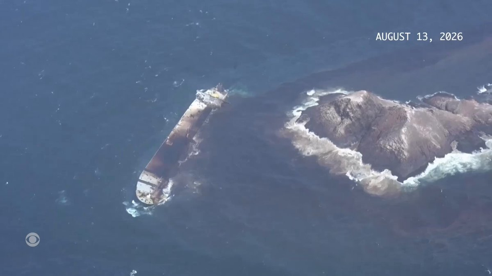
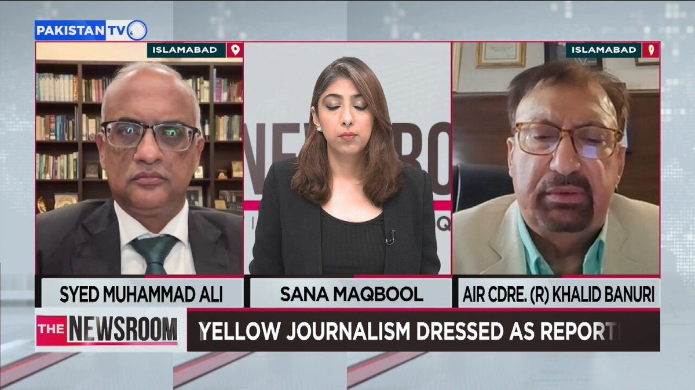
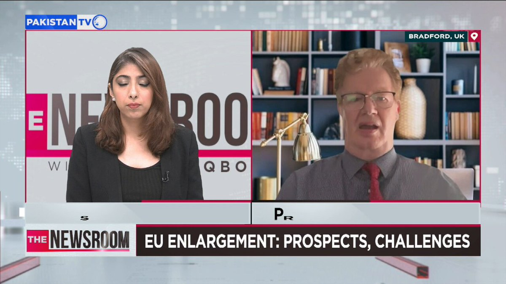

@CBSNews
📝 原文: FDA upgrades egg recall linked to salmonella to highest health risk level
🇨🇳 译文: FDA 将与沙门氏菌有关的鸡蛋召回升级至最高健康风险级别

🕒 2026-08-15T09:00:00+00:00
| 来源 | 旧窗口内数量 | 本次新增 | 本次淘汰 | 当前窗口内共有 |
|---|---|---|---|---|
| 推文 + Dawn 新闻 | 0 | 21 | 0 | 21 |
| ARY News | 0 | 0 | 0 | 0 |
注：淘汰数 = 旧窗口内数量 + 本次新增 - 当前窗口内共有






暂无文章。